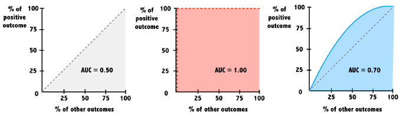

Chapter 19 Supervised Learning: Classification
19.1 k-Nearest Neighbors (kNN)
19.1.1 Classification with Nearest Neighbors
Measuring similarity with distance
Many nearest neighbor learners use the Euclidean distance formula here, which measures the straight-line distance between two points.
\(dist(p, q) = \sqrt{(p_1 - q_1)^2 + (p_2 - q_2)^2 + ... + (p_n - q_n)^2}\)
Applying nearest neighbors in R
library(class)
pred <- knn(training_data, testing_data, training_labels)19.1.1.1 Recognizing a road sign with kNN
After several trips with a human behind the wheel, it is time for the self-driving car to attempt the test course alone.
As it begins to drive away, its camera captures the following image:

Stop Sign
Apply a kNN classifier to help the car recognize this sign.
The dataset signs is loaded in your workspace along with the data frame next_sign, which holds the observation you want to classify.
library(tidyverse)
signs <- read_csv("data/knn_traffic_signs.csv")
signs## # A tibble: 206 × 51
## id sample sign_type r1 g1 b1 r2 g2 b2 r3 g3 b3
## <dbl> <chr> <chr> <dbl> <dbl> <dbl> <dbl> <dbl> <dbl> <dbl> <dbl> <dbl>
## 1 1 train pedestrian 155 228 251 135 188 101 156 227 245
## 2 2 train pedestrian 142 217 242 166 204 44 142 217 242
## 3 3 train pedestrian 57 54 50 187 201 68 51 51 45
## 4 4 train pedestrian 22 35 41 171 178 26 19 27 29
## 5 5 train pedestrian 169 179 170 231 254 27 97 107 99
## 6 6 train pedestrian 75 67 60 131 89 53 214 144 75
## 7 7 train pedestrian 136 149 157 200 203 107 150 167 134
## 8 8 test pedestrian 118 105 69 244 245 67 132 123 12
## 9 9 train pedestrian 149 225 241 34 45 1 155 226 238
## 10 10 train pedestrian 13 34 28 5 21 11 123 154 140
## # ℹ 196 more rows
## # ℹ 39 more variables: r4 <dbl>, g4 <dbl>, b4 <dbl>, r5 <dbl>, g5 <dbl>,
## # b5 <dbl>, r6 <dbl>, g6 <dbl>, b6 <dbl>, r7 <dbl>, g7 <dbl>, b7 <dbl>,
## # r8 <dbl>, g8 <dbl>, b8 <dbl>, r9 <dbl>, g9 <dbl>, b9 <dbl>, r10 <dbl>,
## # g10 <dbl>, b10 <dbl>, r11 <dbl>, g11 <dbl>, b11 <dbl>, r12 <dbl>,
## # g12 <dbl>, b12 <dbl>, r13 <dbl>, g13 <dbl>, b13 <dbl>, r14 <dbl>,
## # g14 <dbl>, b14 <dbl>, r15 <dbl>, g15 <dbl>, b15 <dbl>, r16 <dbl>, …# Testing data
next_sign <- signs %>%
filter(sample == "example") %>%
select(-c(1:3))
str(next_sign)## tibble [1 × 48] (S3: tbl_df/tbl/data.frame)
## $ r1 : num 204
## $ g1 : num 227
## $ b1 : num 220
## $ r2 : num 196
## $ g2 : num 59
## $ b2 : num 51
## $ r3 : num 202
## $ g3 : num 67
## $ b3 : num 59
## $ r4 : num 204
## $ g4 : num 227
## $ b4 : num 220
## $ r5 : num 236
## $ g5 : num 250
## $ b5 : num 234
## $ r6 : num 242
## $ g6 : num 252
## $ b6 : num 235
## $ r7 : num 205
## $ g7 : num 148
## $ b7 : num 131
## $ r8 : num 190
## $ g8 : num 50
## $ b8 : num 43
## $ r9 : num 179
## $ g9 : num 70
## $ b9 : num 57
## $ r10: num 242
## $ g10: num 229
## $ b10: num 212
## $ r11: num 190
## $ g11: num 50
## $ b11: num 43
## $ r12: num 193
## $ g12: num 51
## $ b12: num 44
## $ r13: num 170
## $ g13: num 197
## $ b13: num 196
## $ r14: num 190
## $ g14: num 50
## $ b14: num 43
## $ r15: num 190
## $ g15: num 47
## $ b15: num 41
## $ r16: num 165
## $ g16: num 195
## $ b16: num 196# Training data
signs <- signs %>%
filter(sample == "train") %>%
select(-c(1, 2))
signs## # A tibble: 146 × 49
## sign_type r1 g1 b1 r2 g2 b2 r3 g3 b3 r4 g4
## <chr> <dbl> <dbl> <dbl> <dbl> <dbl> <dbl> <dbl> <dbl> <dbl> <dbl> <dbl>
## 1 pedestrian 155 228 251 135 188 101 156 227 245 145 211
## 2 pedestrian 142 217 242 166 204 44 142 217 242 147 219
## 3 pedestrian 57 54 50 187 201 68 51 51 45 59 62
## 4 pedestrian 22 35 41 171 178 26 19 27 29 19 27
## 5 pedestrian 169 179 170 231 254 27 97 107 99 123 147
## 6 pedestrian 75 67 60 131 89 53 214 144 75 156 169
## 7 pedestrian 136 149 157 200 203 107 150 167 134 171 218
## 8 pedestrian 149 225 241 34 45 1 155 226 238 147 222
## 9 pedestrian 13 34 28 5 21 11 123 154 140 21 46
## 10 pedestrian 123 124 107 83 61 26 116 124 115 67 67
## # ℹ 136 more rows
## # ℹ 37 more variables: b4 <dbl>, r5 <dbl>, g5 <dbl>, b5 <dbl>, r6 <dbl>,
## # g6 <dbl>, b6 <dbl>, r7 <dbl>, g7 <dbl>, b7 <dbl>, r8 <dbl>, g8 <dbl>,
## # b8 <dbl>, r9 <dbl>, g9 <dbl>, b9 <dbl>, r10 <dbl>, g10 <dbl>, b10 <dbl>,
## # r11 <dbl>, g11 <dbl>, b11 <dbl>, r12 <dbl>, g12 <dbl>, b12 <dbl>,
## # r13 <dbl>, g13 <dbl>, b13 <dbl>, r14 <dbl>, g14 <dbl>, b14 <dbl>,
## # r15 <dbl>, g15 <dbl>, b15 <dbl>, r16 <dbl>, g16 <dbl>, b16 <dbl>Create a vector of sign labels to use with kNN by extracting the column
sign_typefromsigns.Identify the
next_signusing theknn()function.Set the
trainargument equal to thesignsdata frame without the first column.Set the
testargument equal to the data framenext_sign.Use the vector of labels you created as the
clargument.
library(class)
# Create a vector of labels
sign_types <- signs$sign_type
# Classify the next sign observed
knn(train = signs[-1], test = next_sign, cl = sign_types)## [1] stop
## Levels: pedestrian speed stopknn simply looks for the most similar example.
19.1.1.2 Exploring the traffic sign dataset
To better understand how the knn() function was able to classify the stop sign, it may help to examine the training dataset it used.
Each previously observed street sign was divided into a 4x4 grid, and the red, green, and blue level for each of the 16 center pixels is recorded as illustrated here.

Stop Sign Data Encoding
The result is a dataset that records the sign_type as well as 16 x 3 = 48 color properties of each sign.
# Examine the structure of the signs dataset
str(signs)## tibble [146 × 49] (S3: tbl_df/tbl/data.frame)
## $ sign_type: chr [1:146] "pedestrian" "pedestrian" "pedestrian" "pedestrian" ...
## $ r1 : num [1:146] 155 142 57 22 169 75 136 149 13 123 ...
## $ g1 : num [1:146] 228 217 54 35 179 67 149 225 34 124 ...
## $ b1 : num [1:146] 251 242 50 41 170 60 157 241 28 107 ...
## $ r2 : num [1:146] 135 166 187 171 231 131 200 34 5 83 ...
## $ g2 : num [1:146] 188 204 201 178 254 89 203 45 21 61 ...
## $ b2 : num [1:146] 101 44 68 26 27 53 107 1 11 26 ...
## $ r3 : num [1:146] 156 142 51 19 97 214 150 155 123 116 ...
## $ g3 : num [1:146] 227 217 51 27 107 144 167 226 154 124 ...
## $ b3 : num [1:146] 245 242 45 29 99 75 134 238 140 115 ...
## $ r4 : num [1:146] 145 147 59 19 123 156 171 147 21 67 ...
## $ g4 : num [1:146] 211 219 62 27 147 169 218 222 46 67 ...
## $ b4 : num [1:146] 228 242 65 29 152 190 252 242 41 52 ...
## $ r5 : num [1:146] 166 164 156 42 221 67 171 170 36 70 ...
## $ g5 : num [1:146] 233 228 171 37 236 50 158 191 60 53 ...
## $ b5 : num [1:146] 245 229 50 3 117 36 108 113 26 26 ...
## $ r6 : num [1:146] 212 84 254 217 205 37 157 26 75 26 ...
## $ g6 : num [1:146] 254 116 255 228 225 36 186 37 108 26 ...
## $ b6 : num [1:146] 52 17 36 19 80 42 11 12 44 21 ...
## $ r7 : num [1:146] 212 217 211 221 235 44 26 34 13 52 ...
## $ g7 : num [1:146] 254 254 226 235 254 42 35 45 27 45 ...
## $ b7 : num [1:146] 11 26 70 20 60 44 10 19 25 27 ...
## $ r8 : num [1:146] 188 155 78 181 90 192 180 221 133 117 ...
## $ g8 : num [1:146] 229 203 73 183 110 131 211 249 163 109 ...
## $ b8 : num [1:146] 117 128 64 73 9 73 236 184 126 83 ...
## $ r9 : num [1:146] 170 213 220 237 216 123 129 226 83 110 ...
## $ g9 : num [1:146] 216 253 234 234 236 74 109 246 125 74 ...
## $ b9 : num [1:146] 120 51 59 44 66 22 73 59 19 12 ...
## $ r10 : num [1:146] 211 217 254 251 229 36 161 30 13 98 ...
## $ g10 : num [1:146] 254 255 255 254 255 34 190 40 27 70 ...
## $ b10 : num [1:146] 3 21 51 2 12 37 10 34 25 26 ...
## $ r11 : num [1:146] 212 217 253 235 235 44 161 34 9 20 ...
## $ g11 : num [1:146] 254 255 255 243 254 42 190 44 23 21 ...
## $ b11 : num [1:146] 19 21 44 12 60 44 6 35 18 20 ...
## $ r12 : num [1:146] 172 158 66 19 163 197 187 241 85 113 ...
## $ g12 : num [1:146] 235 225 68 27 168 114 215 255 128 76 ...
## $ b12 : num [1:146] 244 237 68 29 152 21 236 54 21 14 ...
## $ r13 : num [1:146] 172 164 69 20 124 171 141 205 83 106 ...
## $ g13 : num [1:146] 235 227 65 29 117 102 142 229 125 69 ...
## $ b13 : num [1:146] 244 237 59 34 91 26 140 46 19 9 ...
## $ r14 : num [1:146] 172 182 76 64 188 197 189 226 85 102 ...
## $ g14 : num [1:146] 228 228 84 61 205 114 171 246 128 67 ...
## $ b14 : num [1:146] 235 143 22 4 78 21 140 59 21 6 ...
## $ r15 : num [1:146] 177 171 82 211 125 123 214 235 85 106 ...
## $ g15 : num [1:146] 235 228 93 222 147 74 221 252 128 69 ...
## $ b15 : num [1:146] 244 196 17 78 20 22 201 67 21 9 ...
## $ r16 : num [1:146] 22 164 58 19 160 180 188 237 83 43 ...
## $ g16 : num [1:146] 52 227 60 27 183 107 211 254 125 29 ...
## $ b16 : num [1:146] 53 237 60 29 187 26 227 53 19 11 ...Use table() to count the number of observations of each sign type by passing it the column containing the labels.
# Count the number of signs of each type
table(signs$sign_type)##
## pedestrian speed stop
## 46 49 51Run the provided aggregate() command to see whether the average red level might vary by sign type.
# Check r10's average red level by sign type
aggregate(r10 ~ sign_type, data = signs, mean)## sign_type r10
## 1 pedestrian 113.7
## 2 speed 80.6
## 3 stop 132.4As you might have expected, stop signs tend to have a higher average red value. This is how kNN identifies similar signs.
19.1.1.3 Classifying a collection of road signs
Now that the autonomous vehicle has successfully stopped on its own, your team feels confident allowing the car to continue the test course.
The test course includes 59 additional road signs divided into three types:


At the conclusion of the trial, you are asked to measure the car’s overall performance at recognizing these signs.
So is the data frame test_signs, which holds a set of observations you’ll test your model on.
# whole testing data
test_signs <- read_csv("data/knn_traffic_signs.csv") %>%
filter(sample == "test") %>%
select(-c(1, 2))
test_signs## # A tibble: 59 × 49
## sign_type r1 g1 b1 r2 g2 b2 r3 g3 b3 r4 g4
## <chr> <dbl> <dbl> <dbl> <dbl> <dbl> <dbl> <dbl> <dbl> <dbl> <dbl> <dbl>
## 1 pedestrian 118 105 69 244 245 67 132 123 12 138 123
## 2 pedestrian 221 244 237 52 45 26 205 233 229 203 230
## 3 pedestrian 44 50 43 98 69 25 170 182 172 170 182
## 4 pedestrian 78 106 102 98 125 82 65 91 75 100 122
## 5 pedestrian 163 181 172 53 51 36 170 181 171 44 51
## 6 pedestrian 117 137 132 116 105 67 58 53 27 37 49
## 7 pedestrian 204 227 224 27 44 11 140 163 140 69 83
## 8 pedestrian 69 74 60 35 52 4 62 68 58 148 156
## 9 pedestrian 186 213 210 30 51 18 181 212 187 146 170
## 10 pedestrian 77 94 89 147 180 100 125 156 84 51 59
## # ℹ 49 more rows
## # ℹ 37 more variables: b4 <dbl>, r5 <dbl>, g5 <dbl>, b5 <dbl>, r6 <dbl>,
## # g6 <dbl>, b6 <dbl>, r7 <dbl>, g7 <dbl>, b7 <dbl>, r8 <dbl>, g8 <dbl>,
## # b8 <dbl>, r9 <dbl>, g9 <dbl>, b9 <dbl>, r10 <dbl>, g10 <dbl>, b10 <dbl>,
## # r11 <dbl>, g11 <dbl>, b11 <dbl>, r12 <dbl>, g12 <dbl>, b12 <dbl>,
## # r13 <dbl>, g13 <dbl>, b13 <dbl>, r14 <dbl>, g14 <dbl>, b14 <dbl>,
## # r15 <dbl>, g15 <dbl>, b15 <dbl>, r16 <dbl>, g16 <dbl>, b16 <dbl>Classify the
test_signsdata usingknn().Set
trainequal to the observations insignswithout labels.Use
test_signsfor thetestargument, again without labels.For the
clargument, use the vector of labels provided for you.
# Use kNN to identify the test road signs
sign_types <- signs$sign_type
signs_pred <- knn(train = signs[-1], test = test_signs[-1], cl = sign_types)Use
table()to explore the classifier’s performance at identifying the three sign types (the confusion matrix).Create the vector
signs_actualby extracting the labels fromtest_signs.Pass the vector of predictions and the vector of actual signs to
table()to cross tabulate them.
# Create a confusion matrix of the predicted versus actual values
signs_actual <- test_signs$sign_type
table(signs_pred, signs_actual)## signs_actual
## signs_pred pedestrian speed stop
## pedestrian 19 2 0
## speed 0 17 0
## stop 0 2 19- Compute the overall accuracy of the kNN learner using the
mean()function.
# Compute the accuracy
mean(signs_pred == signs_actual)## [1] 0.932The confusion matrix lets you look for patterns in the classifier’s errors.
19.1.2 ‘k’ in kNN
The letter k is a variable that specifies the number of neighbors to consider when making the classification. You can imagine it as determining the size of the neighborhoods.
Bigger ‘k’ is not always better

A small k creates very small neighborhoods; the classifier is able to discover very subtle patterns. As this image illustrates, you might imagine it as being able to distinguish between groups even when their boundary is somewhat “fuzzy.”
On the other hand, sometimes a “fuzzy” boundary is not a true pattern, but rather due to some other factor that adds randomness into the data. This is called noise.
Setting k larger, as this image shows, ignores some potentially-noisy points in an effort to discover a broader, more general pattern.
Choosing ‘k’
In practice, the optimal value depends on the complexity of the pattern to be learned, as well as the impact of noisy data.
Some suggest a rule of thumb starting with k equal to the square root of the number of observations in the training data.
19.1.2.1 Testing other ‘k’ values
By default, the knn() function in the class package uses only the single nearest neighbor.
Setting a k parameter allows the algorithm to consider additional nearby neighbors. This enlarges the collection of neighbors which will vote on the predicted class.
Compare k values of 1, 7, and 15 to examine the impact on traffic sign classification accuracy.
Modify the knn() function call by setting k = number and again find accuracy value.
# Compute the accuracy of the baseline model (default k = 1)
k_1 <- knn(train = signs[-1], test = test_signs[-1], cl = sign_types)
mean(k_1 == signs_actual)## [1] 0.932# Modify the above to set k = 7
k_7 <- knn(train = signs[-1], test = test_signs[-1], cl = sign_types, k = 7)
mean(k_7 == signs_actual)## [1] 0.966# Set k = 15 and compare to the above
k_15 <- knn(train = signs[-1], test = test_signs[-1], cl = sign_types, k = 15)
mean(k_15 == signs_actual)## [1] 0.915k = 7 has the higest accurancy.
19.1.2.2 Seeing how the neighbors voted
When multiple nearest neighbors hold a vote, it can sometimes be useful to examine whether the voters were unanimous or widely separated.
For example, knowing more about the voters’ confidence in the classification could allow an autonomous vehicle to use caution in the case there is any chance at all that a stop sign is ahead.
Build a kNN model with the prob = TRUE parameter to compute the vote proportions.
# Use the prob parameter to get the proportion of votes for the winning class
sign_pred <- knn(train = signs[-1], test = test_signs[-1], cl = sign_types, k = 7, prob = TRUE)Use the attr() function to obtain the vote proportions for the predicted class. These are stored in the attribute "prob".
# Get the "prob" attribute from the predicted classes
sign_prob <- attr(sign_pred, "prob")
# Examine the first several predictions
head(sign_pred)## [1] pedestrian pedestrian pedestrian stop pedestrian pedestrian
## Levels: pedestrian speed stop# Examine the proportion of votes for the winning class
# see how the confidence varies from sign to sign
head(sign_prob)## [1] 0.571 0.571 0.857 0.571 0.857 0.571Now you can get an idea of how certain your kNN learner is about its classifications.
19.1.3 1-3.Data preparation for kNN
1/0 dummy variables
Variables with different scale: allows the features with a wider range to have more influence over the distance calculation
- Normalizing data: Rescaling reduces the influence of extreme values on kNN’s distance function.
# define a min-max normalize() function
normalize <- function(x) {
return((x - min(x)) / (max(x) - min(x)))
}19.2 Naive Bayes
19.2.1 Understanding Bayesian methods
Joint probability and independent events
The joint probability of events A and B is denoted P(A and B)
One event is independent of another if knowing one doesn’t give you information about how likely the other is.
Conditional probability and dependent events
The conditional probability of events A and B is denoted P(A | B)
Knowing that one occurred tells you much about the status of the other.
\(P(A|B) = \frac{P(A\ and\ B)}{P(B)}\)
Making predictions with Naive Bayes
# building a Naive Bayes model library(naivebayes) model <- naive_bayes(y ~ x, data) # making predictions with Naive Bayes future_predict <- predict(model, future_conditions)
19.2.1.1 Computing probabilities
Calculations like these are the basis of the Naive Bayes destination prediction model you’ll develop in later exercises.
location <- read_csv("data/locations.csv")
location## # A tibble: 2,184 × 7
## month day weekday daytype hour hourtype location
## <dbl> <dbl> <chr> <chr> <dbl> <chr> <chr>
## 1 1 4 wednesday weekday 0 night home
## 2 1 4 wednesday weekday 1 night home
## 3 1 4 wednesday weekday 2 night home
## 4 1 4 wednesday weekday 3 night home
## 5 1 4 wednesday weekday 4 night home
## 6 1 4 wednesday weekday 5 night home
## 7 1 4 wednesday weekday 6 morning home
## 8 1 4 wednesday weekday 7 morning home
## 9 1 4 wednesday weekday 8 morning home
## 10 1 4 wednesday weekday 9 morning office
## # ℹ 2,174 more rowsThe where9am data frame contains 91 days (thirteen weeks) worth of data in which Brett recorded his location at 9am each day as well as whether the daytype was a weekend or weekday.
where9am <- location %>%
filter(hour == 9) %>%
select(daytype, location) %>%
mutate(location = factor(location, levels = c("appointment", "campus", "home", "office")))
where9am## # A tibble: 91 × 2
## daytype location
## <chr> <fct>
## 1 weekday office
## 2 weekday office
## 3 weekday office
## 4 weekend home
## 5 weekend home
## 6 weekday campus
## 7 weekday home
## 8 weekday appointment
## 9 weekday office
## 10 weekday office
## # ℹ 81 more rowsUsing the conditional probability formula, you can compute the probability that Brett is working in the office, given that it is a weekday.
\(P(A|B) = \frac{P(A\ and\ B)}{P(B)}\)
# Compute P(A)
#Find P(office) using nrow() and subset() to count rows in the dataset and save the result as p_A.
p_A <- nrow(subset(where9am, location == "office")) / nrow(where9am)
# Compute P(B)
# Find P(weekday), using nrow() and subset() again, and save the result as p_B.
p_B <- nrow(subset(where9am, daytype == "weekday")) / nrow(where9am)
# Compute the observed P(A and B)
# Find P(office and weekday)
p_AB <- nrow(subset(where9am, daytype == "weekday" & location == "office")) / nrow(where9am)
# Compute P(A | B) and print its value
p_A_given_B <- p_AB / p_B
p_A_given_B## [1] 0.6There is a 60% chance Brett is in the office at 9am given that it is a weekday.
19.2.1.2 A simple Naive Bayes model
The previous exercises showed that the probability that Brett is at work or at home at 9am is highly dependent on whether it is the weekend or a weekday.
To see this finding in action, use the where9am data frame to build a Naive Bayes model on the same data.
You can then use this model to predict the future: where does the model think that Brett will be at 9am on Thursday and at 9am on Saturday?
# Load the naivebayes package
library(naivebayes)## naivebayes 0.9.7 loaded##
## Attaching package: 'naivebayes'## The following object is masked from 'package:data.table':
##
## tables# Build the location prediction model
locmodel <- naive_bayes(location ~ daytype, data = where9am)## Warning: naive_bayes(): Feature daytype - zero probabilities are present.
## Consider Laplace smoothing.Forecast the Thursday 9am location using predict() with the thursday9am object as the newdata argument.
thursday9am <- data.frame(daytype = "weekday")
# Predict Thursday's 9am location
predict(locmodel, thursday9am)## [1] office
## Levels: appointment campus home officeDo the same for predicting the saturday9am location.
saturday9am <- data.frame(daytype = "weekend")
# Predict Saturdays's 9am location
predict(locmodel, saturday9am)## [1] home
## Levels: appointment campus home officeNot surprisingly, Brett is most likely at the office at 9am on a Thursday, but at home at the same time on a Saturday!
19.2.1.3 Examining “raw” probabilities
Typing the name of the model object provides the a priori (overall) and conditional probabilities of each of the model’s predictors.
Alternatively, R will compute the posterior probabilities for you if the type = "prob" parameter is supplied to the predict() function.
Using these methods, examine how the model’s predicted 9am location probability varies from day-to-day.
View the computed a priori and conditional probabilities.
# Examine the location prediction model
locmodel##
## ================================== Naive Bayes ==================================
##
## Call:
## naive_bayes.formula(formula = location ~ daytype, data = where9am)
##
## ---------------------------------------------------------------------------------
##
## Laplace smoothing: 0
##
## ---------------------------------------------------------------------------------
##
## A priori probabilities:
##
## appointment campus home office
## 0.011 0.110 0.451 0.429
##
## ---------------------------------------------------------------------------------
##
## Tables:
##
## ---------------------------------------------------------------------------------
## ::: daytype (Bernoulli)
## ---------------------------------------------------------------------------------
##
## daytype appointment campus home office
## weekday 1.000 1.000 0.366 1.000
## weekend 0.000 0.000 0.634 0.000
##
## ---------------------------------------------------------------------------------See the predicted probabilities for Thursday at 9am.
# Obtain the predicted probabilities for Thursday at 9am
predict(locmodel, thursday9am, type = "prob")## appointment campus home office
## [1,] 0.0154 0.154 0.231 0.6Compare these to the predicted probabilities for Saturday at 9am.
# Obtain the predicted probabilities for Saturday at 9am
predict(locmodel, saturday9am, type = "prob")## appointment campus home office
## [1,] 0.0000384 0.000384 0.998 0.0015Notice the predicted probability of Brett being at the office on a Saturday is essentially zero.
19.2.2 Understanding NB’s “naivety”
The challenge of multiple predictors
- When adding more predictor, it becomes more inefficient to calculate the overlap.
A “naive” simplification
- Naive Bayes algorithm uses a shortcut to approximate the conditional probability we hope to compute.
- Rather than treating the problem as the intersection of all of the related events, the algorithm makes a so-called “naive” assumption about the data.
Specifically, it assumes that the events are independent. When events are independent, the joint probability can be computed by multiplying the individual probabilities.

An “infrequent” problem
Suppose further that one of those events has never been observed previously in combination with the outcome. And whenever zero is multiplied in a chain, the entire sequence becomes zero.
The Laplace correction
The solution to this problem involves adding a small number, usually ‘1’, to each event and outcome combination to eliminate this veto power.

As a result, there will be at least some predicted probability for every future outcome even if it has never been seen before.
19.2.2.1 A more sophisticated location model
The locations dataset records Brett’s location every hour for 13 weeks. Each hour, the tracking information includes the daytype (weekend or weekday) as well as the hourtype (morning, afternoon, evening, or night).
Using this data, build a more sophisticated model to see how Brett’s predicted location not only varies by the day of week but also by the time of day.
# Build a NB model of location
locmodel <- naive_bayes(location ~ daytype + hourtype, location)
# Predict Brett's location on a weekday afternoon
weekday_afternoon <- data.frame(daytype = "weekday", hourtype = "afternoon")
predict(locmodel, weekday_afternoon)## [1] office
## Levels: appointment campus home office restaurant store theater# Predict Brett's location on a weekday evening
weekday_evening <- data.frame(daytype = "weekday", hourtype = "evening")
predict(locmodel, weekday_evening)## [1] home
## Levels: appointment campus home office restaurant store theaterNaive Bayes model forecasts that Brett will be at the office on a weekday afternoon and at home in the evening.
19.2.2.2 Preparing for unforeseen circumstances
While Brett was tracking his location over 13 weeks, he never went into the office during the weekend. Consequently, the joint probability of P(office and weekend) = 0.
Explore how this impacts the predicted probability that Brett may go to work on the weekend in the future. Additionally, you can see how using the Laplace correction will allow a small chance for these types of unforeseen circumstances.
naive_bayes(..., laplace = 1)
Output predicted probabilities for a weekend afternoon.
weekend_afternoon <- data.frame(daytype = "weekend", hourtype = "afternoon")
# Observe the predicted probabilities for a weekend afternoon
predict(locmodel, weekend_afternoon, type = "prob")## appointment campus home office restaurant store theater
## [1,] 0.0246 0.00048 0.844 0.00335 0.111 0.0164 0.0000739Create a new naive Bayes model with the Laplace smoothing parameter set to 1.
# Build a new model using the Laplace correction
locmodel2 <- naive_bayes(location ~ daytype + hourtype, location, laplace = 1)
# Observe the new predicted probabilities for a weekend afternoon
predict(locmodel2, weekend_afternoon, type = "prob")## appointment campus home office restaurant store theater
## [1,] 0.0201 0.00619 0.831 0.00793 0.11 0.0187 0.00634Adding the Laplace correction allows for the small chance that Brett might go to the office on the weekend in the future.
The small probability added to every outcome ensures that they are all possible even if never previously observed.
19.3 Logistic Regression
19.3.1 Making binary predictions with regression
Making predictions with logistic regression

Sometimes you may need to set this threshold (0.5) higher or lower to make the model more or less aggressive.
19.3.1.1 Building simple logistic regression models
The donors dataset contains 93,462 examples of people mailed in a fundraising solicitation for paralyzed military veterans. The donated column is 1 if the person made a donation in response to the mailing and 0 otherwise. This binary outcome will be the dependent variable for the logistic regression model.
The remaining columns are features of the prospective donors that may influence their donation behavior. These are the model’s independent variables.
donors <- read_csv("data/donors.csv")
# Examine the dataset to identify potential independent variables
glimpse(donors)## Rows: 93,462
## Columns: 13
## $ donated <dbl> 0, 0, 0, 0, 0, 0, 0, 0, 0, 0, 0, 0, 0, 0, 0, 0, 0, 0…
## $ veteran <dbl> 0, 0, 0, 0, 0, 0, 0, 0, 0, 0, 0, 0, 0, 0, 0, 0, 0, 0…
## $ bad_address <dbl> 0, 0, 0, 0, 0, 0, 0, 0, 0, 0, 0, 0, 0, 0, 0, 0, 0, 0…
## $ age <dbl> 60, 46, NA, 70, 78, NA, 38, NA, NA, 65, NA, 75, 72, …
## $ has_children <dbl> 0, 1, 0, 0, 1, 0, 1, 0, 0, 0, 0, 0, 1, 0, 0, 0, 0, 1…
## $ wealth_rating <dbl> 0, 3, 1, 2, 1, 0, 2, 3, 1, 0, 1, 2, 1, 0, 2, 3, 2, 0…
## $ interest_veterans <dbl> 0, 0, 0, 0, 0, 0, 0, 0, 0, 0, 0, 0, 0, 0, 0, 0, 0, 0…
## $ interest_religion <dbl> 0, 0, 0, 0, 1, 0, 0, 0, 0, 0, 0, 0, 0, 0, 0, 0, 1, 0…
## $ pet_owner <dbl> 0, 0, 0, 0, 0, 0, 1, 0, 0, 0, 0, 0, 0, 0, 0, 0, 0, 0…
## $ catalog_shopper <dbl> 0, 0, 0, 0, 1, 0, 0, 0, 0, 0, 0, 0, 0, 0, 0, 0, 0, 0…
## $ recency <chr> "CURRENT", "CURRENT", "CURRENT", "CURRENT", "CURRENT…
## $ frequency <chr> "FREQUENT", "FREQUENT", "FREQUENT", "FREQUENT", "FRE…
## $ money <chr> "MEDIUM", "HIGH", "MEDIUM", "MEDIUM", "MEDIUM", "MED…Count the number of occurrences of each level of the donated variable.
# Explore the dependent variable
table(donors$donated)##
## 0 1
## 88751 4711Hypothesis about which independent variables will be predictive of the dependent variable.
The
bad_addresscolumn, which is set to1for an invalid mailing address and0otherwise, seems like it might reduce the chances of a donation.One might suspect that religious interest (
interest_religion)Interest in veterans affairs (
interest_veterans) would be associated with greater charitable giving.
# Build the donation model
donation_model <- glm(
donated ~ bad_address + interest_religion + interest_veterans,
data = donors,
family = "binomial")
# Summarize the model results
summary(donation_model)##
## Call:
## glm(formula = donated ~ bad_address + interest_religion + interest_veterans,
## family = "binomial", data = donors)
##
## Coefficients:
## Estimate Std. Error z value Pr(>|z|)
## (Intercept) -2.9514 0.0165 -178.66 <0.0000000000000002 ***
## bad_address -0.3078 0.1435 -2.15 0.032 *
## interest_religion 0.0672 0.0507 1.33 0.185
## interest_veterans 0.1101 0.0468 2.35 0.019 *
## ---
## Signif. codes: 0 '***' 0.001 '**' 0.01 '*' 0.05 '.' 0.1 ' ' 1
##
## (Dispersion parameter for binomial family taken to be 1)
##
## Null deviance: 37330 on 93461 degrees of freedom
## Residual deviance: 37316 on 93458 degrees of freedom
## AIC: 37324
##
## Number of Fisher Scoring iterations: 519.3.1.2 Making a binary prediction
In the previous exercise, you used the glm() function to build a logistic regression model of donor behavior.
By default, predict() outputs predictions in terms of log odds unless type = "response" is specified. This converts the log odds to probabilities.
Because a logistic regression model estimates the probability of the outcome, it is up to you to determine the threshold at which the probability implies action. One must balance the extremes of being too cautious versus being too aggressive.
# Estimate the donation probability
# Estimate each person's donation probability
donors$donation_prob <- predict(donation_model, type = "response")
# Find the donation probability of the average prospect
# Find the actual probability that an average person would donate
mean(donors$donated)## [1] 0.0504Use ifelse() to predict a donation if their predicted donation probability is greater than average. Then calculate the model’s accuracy.
# Predict a donation if probability of donation is greater than average (0.0504)
donors$donation_pred <- ifelse(donors$donation_prob > 0.0504, 1, 0)
# Calculate the model's accuracy
mean(donors$donation_pred == donors$donated)## [1] 0.795With an accuracy of nearly 80%, the model seems to be doing its job. But is it too good to be true? There are the limitations of accuracy.
19.3.2 Model performance tradeoffs
As the previous exercise illustrated, rare events create challenges for classification models. When one outcome is very rare, predicting the opposite can result in a very high accuracy.
ROC curves

Provides a way to better understand a model’s ability to distinguish between positive and negative predictions the outcome of interest versus all others.
The ROC curve depicts the relationship between the percentage of positive examples as it relates to the percentage of the other outcomes.
The diagonal line is the baseline performance for a very poor model. The further another curve is away from this, the better it is performing.
Area under the ROC curve (AUC)

The baseline model that is no better than random chance has an AUC = 0.5.
A perfect model has an AUC = 1.
The closer the AUC is to 1, the better.
Using AUC and ROC appropriately
Curves of varying shapes can have the same AUC value. For this reason, it is important to look not only at the AUC but also how the shape of each curve indicates how a model is performing across the range of predictions.

For example, one model may do extremely well at identifying a few easy cases at first but perform poorly on more difficult cases. Another model may do just the opposite.
When AUC values are very close, it’s important to know more about how the model will be used.
19.3.2.1 Calculating ROC Curves and AUC
Graphing the model’s performance better illustrates the tradeoff between a model that is overly aggressive and one that is overly passive.
Create a ROC curve with roc(actual, predicted) and the columns of actual and predicted donations.
# Load the pROC package
library(pROC)## Type 'citation("pROC")' for a citation.##
## Attaching package: 'pROC'## The following objects are masked from 'package:stats':
##
## cov, smooth, var# Create a ROC curve
ROC <- roc(donors$donated, donors$donation_prob)## Setting levels: control = 0, case = 1## Setting direction: controls < casesUse plot() to draw the ROC object.
# Plot the ROC curve
plot(ROC, col = "blue")Compute the area under the curve with auc().
# Calculate the area under the curve (AUC)
auc(ROC)## Area under the curve: 0.51Based on this visualization, the model isn’t doing much better than baseline—a model doing nothing but making predictions at random.
19.3.3 Dummy variables, missing data, and interactions
19.3.3.1 Dummy coding
Sometimes a dataset contains numeric values that represent a categorical feature.
In the donors dataset, wealth_rating uses numbers to indicate the donor’s wealth level:
0 = Unknown
1 = Low
2 = Medium
3 = High
This exercise illustrates how to prepare this type of categorical feature and examines its impact on a logistic regression model.
Create a factor
wealth_levelsfrom the numericwealth_ratingwith labels as shown above.Then, use
relevel()to change the reference category toMedium. (參照組)Build a logistic regression model using the column
wealth_levelsto predictdonatedand display the result withsummary().
# Convert the wealth rating to a factor
donors$wealth_levels <- factor(donors$wealth_rating,
levels = c(0, 1, 2, 3),
labels = c("Unknown", "Low", "Medium", "High"))
# Use relevel() to change reference category
donors$wealth_levels <- relevel(donors$wealth_levels, ref = "Medium")
# See how our factor coding impacts the model
summary(glm(donated ~ wealth_levels, donors, family = "binomial"))##
## Call:
## glm(formula = donated ~ wealth_levels, family = "binomial", data = donors)
##
## Coefficients:
## Estimate Std. Error z value Pr(>|z|)
## (Intercept) -2.9189 0.0361 -80.77 <0.0000000000000002 ***
## wealth_levelsUnknown -0.0437 0.0424 -1.03 0.30
## wealth_levelsLow -0.0524 0.0533 -0.98 0.33
## wealth_levelsHigh 0.0480 0.0477 1.01 0.31
## ---
## Signif. codes: 0 '***' 0.001 '**' 0.01 '*' 0.05 '.' 0.1 ' ' 1
##
## (Dispersion parameter for binomial family taken to be 1)
##
## Null deviance: 37330 on 93461 degrees of freedom
## Residual deviance: 37323 on 93458 degrees of freedom
## AIC: 37331
##
## Number of Fisher Scoring iterations: 519.3.3.2 Handling missing data
Some of the prospective donors have missing age data. Unfortunately, R will exclude any cases with NA values when building a regression model.
One workaround is to replace, or impute, the missing values with an estimated value.
After doing so, you may also create a missing data indicator to model the possibility that cases with missing data are different in some way from those without.
# Find the average age among non-missing values
summary(donors$age)## Min. 1st Qu. Median Mean 3rd Qu. Max. NA's
## 1 48 62 62 75 98 22546Use ifelse() and the test is.na(donors$age) to impute the average (rounded to 2 decimal places) for cases with missing age. Be sure to also ignore NAs.
Create a binary dummy variable named missing_age indicating the presence of missing data using another ifelse() call and the same test.
# Impute missing age values with the mean age
donors$imputed_age <- ifelse(is.na(donors$age), 61.65, donors$age)
# Create missing value indicator for age
donors$missing_age <- ifelse(is.na(donors$age), 1, 0)
head(donors %>% select(age, imputed_age, missing_age))## # A tibble: 6 × 3
## age imputed_age missing_age
## <dbl> <dbl> <dbl>
## 1 60 60 0
## 2 46 46 0
## 3 NA 61.6 1
## 4 70 70 0
## 5 78 78 0
## 6 NA 61.6 1Sometimes missing data has to be dealt with using more complicated methods.
19.3.3.3 Building a interaction model
One of the best predictors of future giving is a history of recent, frequent, and large gifts. In marketing terms, this is known as R/F/M:
Recency
Frequency
Money
Donors that haven’t given both recently and frequently may be especially likely to give again; in other words, the combined impact of recency and frequency may be greater than the sum of the separate effects.
Because these predictors together have a greater impact on the dependent variable, their joint effect must be modeled as an interaction.
- Create a logistic regression model of
donatedas a function ofmoneyplus the interaction ofrecencyandfrequency.
# Build a recency, frequency, and money (RFM) model
rfm_model <- glm(donated ~ money + recency * frequency, donors, family = "binomial")
# Summarize the RFM model to see how the parameters were coded
summary(rfm_model)##
## Call:
## glm(formula = donated ~ money + recency * frequency, family = "binomial",
## data = donors)
##
## Coefficients:
## Estimate Std. Error z value
## (Intercept) -3.0114 0.0428 -70.38
## moneyMEDIUM 0.3619 0.0430 8.41
## recencyLAPSED -0.8668 0.4143 -2.09
## frequencyINFREQUENT -0.5015 0.0311 -16.14
## recencyLAPSED:frequencyINFREQUENT 1.0179 0.5171 1.97
## Pr(>|z|)
## (Intercept) <0.0000000000000002 ***
## moneyMEDIUM <0.0000000000000002 ***
## recencyLAPSED 0.036 *
## frequencyINFREQUENT <0.0000000000000002 ***
## recencyLAPSED:frequencyINFREQUENT 0.049 *
## ---
## Signif. codes: 0 '***' 0.001 '**' 0.01 '*' 0.05 '.' 0.1 ' ' 1
##
## (Dispersion parameter for binomial family taken to be 1)
##
## Null deviance: 37330 on 93461 degrees of freedom
## Residual deviance: 36938 on 93457 degrees of freedom
## AIC: 36948
##
## Number of Fisher Scoring iterations: 6Compute the AUC for the new model with the function auc() and compare performance to the simpler model.
# Compute predicted probabilities for the RFM model
rfm_prob <- predict(rfm_model, type = "response")
# Plot the ROC curve and find AUC for the new model
ROC <- roc(donors$donated, rfm_prob)## Setting levels: control = 0, case = 1## Setting direction: controls < casesplot(ROC, col = "red")auc(ROC)## Area under the curve: 0.578Based on the ROC curve, you’ve confirmed that past giving patterns are certainly predictive of future giving.
19.3.4 Automatic feature selection
Stepwise regression
Backward stepwise
Begins with a model containing all of the predictors.
It then checks to see what happens when each one of the predictors is removed from the model. If removing a predictor does not substantially impact the model’s ability to predict the outcome, then it can be safely deleted.
At each step, the predictor that impacts the model the least is removed. This continues step-by-step until only important predictors remain.
Forward stepwise
Beginning with a model containing no predictors.
It examines each potential predictor to see which one, if any, offers the greatest improvement to the model’s predictive power.
Predictors are added step-by-step until no new predictors add substantial value to the model.

It is possible that the two could come to completely different conclusions about the most important predictors.
19.3.4.1 Building a stepwise regression model
In the absence of subject-matter expertise, stepwise regression can assist with the search for the most important predictors of the outcome of interest.
In this exercise, you will use a forward stepwise approach to add predictors to the model one-by-one until no additional benefit is seen.
Specify the base model with no predictors.
Specify the model with all predictors.
# Specify a null model with no predictors
null_model <- glm(donated ~ 1, data = donors, family = "binomial")
# Specify the full model using all of the potential predictors
full_model <- glm(donated ~ ., data = donors, family = "binomial")Apply step() to these models to perform forward stepwise regression.
step(null, scope = list(lower = null, upper = full), direction = "forward")
# Use a forward stepwise algorithm to build a parsimonious model
step_model <- step(null_model, scope = list(lower = null_model, upper = full_model), direction = "forward")## Start: AIC=37332
## donated ~ 1## Warning in add1.glm(fit, scope$add, scale = scale, trace = trace, k = k, :
## using the 70916/93462 rows from a combined fit## Df Deviance AIC
## + frequency 1 28502 37122
## + money 1 28621 37241
## + wealth_rating 1 28705 37326
## + has_children 1 28705 37326
## + age 1 28707 37328
## + imputed_age 1 28707 37328
## + wealth_levels 3 28704 37328
## + interest_veterans 1 28709 37330
## + donation_prob 1 28710 37330
## + donation_pred 1 28710 37330
## + catalog_shopper 1 28710 37330
## + pet_owner 1 28711 37331
## <none> 28714 37332
## + interest_religion 1 28712 37333
## + recency 1 28713 37333
## + bad_address 1 28714 37334
## + veteran 1 28714 37334
##
## Step: AIC=37025
## donated ~ frequency## Warning in add1.glm(fit, scope$add, scale = scale, trace = trace, k = k, :
## using the 70916/93462 rows from a combined fit## Df Deviance AIC
## + money 1 28441 36966
## + wealth_rating 1 28493 37018
## + wealth_levels 3 28490 37019
## + has_children 1 28494 37019
## + donation_prob 1 28498 37023
## + interest_veterans 1 28498 37023
## + catalog_shopper 1 28499 37024
## + donation_pred 1 28499 37024
## + age 1 28499 37024
## + imputed_age 1 28499 37024
## + pet_owner 1 28499 37024
## <none> 28502 37025
## + interest_religion 1 28501 37026
## + recency 1 28501 37026
## + bad_address 1 28502 37026
## + veteran 1 28502 37027
##
## Step: AIC=36950
## donated ~ frequency + money## Warning in add1.glm(fit, scope$add, scale = scale, trace = trace, k = k, :
## using the 70916/93462 rows from a combined fit## Df Deviance AIC
## + wealth_levels 3 28427 36942
## + wealth_rating 1 28431 36942
## + has_children 1 28432 36943
## + interest_veterans 1 28438 36948
## + donation_prob 1 28438 36949
## + catalog_shopper 1 28438 36949
## + donation_pred 1 28439 36949
## + age 1 28439 36949
## + imputed_age 1 28439 36949
## + pet_owner 1 28439 36949
## <none> 28441 36950
## + interest_religion 1 28440 36951
## + recency 1 28440 36951
## + bad_address 1 28441 36951
## + veteran 1 28441 36952
##
## Step: AIC=36945
## donated ~ frequency + money + wealth_levels## Warning in add1.glm(fit, scope$add, scale = scale, trace = trace, k = k, :
## using the 70916/93462 rows from a combined fit## Df Deviance AIC
## + has_children 1 28416 36937
## + age 1 28424 36944
## + imputed_age 1 28424 36944
## + interest_veterans 1 28424 36945
## + donation_prob 1 28424 36945
## + catalog_shopper 1 28424 36945
## + donation_pred 1 28425 36945
## <none> 28427 36945
## + pet_owner 1 28425 36946
## + interest_religion 1 28426 36947
## + recency 1 28426 36947
## + bad_address 1 28427 36947
## + veteran 1 28427 36947
##
## Step: AIC=36938
## donated ~ frequency + money + wealth_levels + has_children## Warning in add1.glm(fit, scope$add, scale = scale, trace = trace, k = k, :
## using the 70916/93462 rows from a combined fit## Df Deviance AIC
## + pet_owner 1 28413 36937
## + donation_prob 1 28413 36937
## + catalog_shopper 1 28413 36937
## + interest_veterans 1 28413 36937
## + donation_pred 1 28414 36938
## <none> 28416 36938
## + interest_religion 1 28415 36939
## + age 1 28416 36940
## + imputed_age 1 28416 36940
## + recency 1 28416 36940
## + bad_address 1 28416 36940
## + veteran 1 28416 36940
##
## Step: AIC=36932
## donated ~ frequency + money + wealth_levels + has_children +
## pet_owner## Warning in add1.glm(fit, scope$add, scale = scale, trace = trace, k = k, :
## using the 70916/93462 rows from a combined fit## Df Deviance AIC
## <none> 28413 36932
## + donation_prob 1 28411 36932
## + interest_veterans 1 28411 36932
## + catalog_shopper 1 28412 36933
## + donation_pred 1 28412 36933
## + age 1 28412 36933
## + imputed_age 1 28412 36933
## + recency 1 28413 36934
## + interest_religion 1 28413 36934
## + bad_address 1 28413 36934
## + veteran 1 28413 36934# Estimate the stepwise donation probability
step_prob <- predict(step_model, type = "response")
# Plot the ROC of the stepwise model
ROC <- roc(donors$donated, step_prob)## Setting levels: control = 0, case = 1## Setting direction: controls < casesplot(ROC, col = "red")auc(ROC)## Area under the curve: 0.585Despite the caveats of stepwise regression, it seems to have resulted in a relatively strong model!
19.4 Classification Trees
19.4.1 Making decisions with trees
A decision tree model

Beginning at the root node, data flows through if/else decision nodes that split the data according to its attributes.
The branches indicate the potential choices.
The leaf nodes denote the final decisions. These are also known as terminal nodes because they terminate the decision making process.
Building trees in R
# building a simple rpart classification tree
library(rpart)
model <- rpart(y ~ x, data, method = "class")
# making predictions from an rpart tree
p <- predict(model, test_data, type = "class")19.4.1.1 Building a simple decision tree
The loans dataset contains 11,312 randomly-selected people who applied for and later received loans from Lending Club, a US-based peer-to-peer lending company.
You will use a decision tree to try to learn patterns in the outcome of these loans (either repaid or default) based on the requested loan amount and credit score at the time of application.
Then, see how the tree’s predictions differ for an applicant with good credit versus one with bad credit.
loans <- read_csv("data/loans.csv")
glimpse(loans)## Rows: 39,732
## Columns: 16
## $ keep <dbl> 1, 1, 0, 0, 0, 0, 0, 1, 1, 1, 0, 0, 1, 0, 1, 0, 0, …
## $ rand <dbl> 0.1305, 0.9982, 0.6283, 0.2524, 0.4745, 0.7499, 0.8…
## $ default <dbl> 0, 1, 0, 0, 0, 0, 0, 0, 1, 1, 0, 0, 1, 0, 1, 0, 0, …
## $ loan_amount <chr> "LOW", "LOW", "LOW", "MEDIUM", "LOW", "LOW", "MEDIU…
## $ emp_length <chr> "10+ years", "< 2 years", "10+ years", "10+ years",…
## $ home_ownership <chr> "RENT", "RENT", "RENT", "RENT", "RENT", "RENT", "RE…
## $ income <chr> "LOW", "LOW", "LOW", "MEDIUM", "HIGH", "LOW", "MEDI…
## $ loan_purpose <chr> "credit_card", "car", "small_business", "other", "o…
## $ debt_to_income <chr> "HIGH", "LOW", "AVERAGE", "HIGH", "AVERAGE", "AVERA…
## $ credit_score <chr> "AVERAGE", "AVERAGE", "AVERAGE", "AVERAGE", "AVERAG…
## $ recent_inquiry <chr> "YES", "YES", "YES", "YES", "NO", "YES", "YES", "YE…
## $ delinquent <chr> "NEVER", "NEVER", "NEVER", "MORE THAN 2 YEARS AGO",…
## $ credit_accounts <chr> "FEW", "FEW", "FEW", "AVERAGE", "MANY", "AVERAGE", …
## $ bad_public_record <chr> "NO", "NO", "NO", "NO", "NO", "NO", "NO", "NO", "NO…
## $ credit_utilization <chr> "HIGH", "LOW", "HIGH", "LOW", "MEDIUM", "MEDIUM", "…
## $ past_bankrupt <chr> "NO", "NO", "NO", "NO", "NO", "NO", "NO", "NO", "NO…# Setup dataset
loans <- loans %>%
filter(keep == 1) %>%
mutate(outcome = factor(default,
levels = c(0, 1),
labels = c("repaid", "default"))) %>%
select(-c(keep, rand, default))
loans$outcome <- relevel(loans$outcome, ref = "default")
# view structure
str(loans)## tibble [11,312 × 14] (S3: tbl_df/tbl/data.frame)
## $ loan_amount : chr [1:11312] "LOW" "LOW" "LOW" "MEDIUM" ...
## $ emp_length : chr [1:11312] "10+ years" "< 2 years" "6 - 9 years" "2 - 5 years" ...
## $ home_ownership : chr [1:11312] "RENT" "RENT" "RENT" "OWN" ...
## $ income : chr [1:11312] "LOW" "LOW" "MEDIUM" "MEDIUM" ...
## $ loan_purpose : chr [1:11312] "credit_card" "car" "car" "small_business" ...
## $ debt_to_income : chr [1:11312] "HIGH" "LOW" "LOW" "LOW" ...
## $ credit_score : chr [1:11312] "AVERAGE" "AVERAGE" "LOW" "AVERAGE" ...
## $ recent_inquiry : chr [1:11312] "YES" "YES" "YES" "YES" ...
## $ delinquent : chr [1:11312] "NEVER" "NEVER" "NEVER" "NEVER" ...
## $ credit_accounts : chr [1:11312] "FEW" "FEW" "FEW" "AVERAGE" ...
## $ bad_public_record : chr [1:11312] "NO" "NO" "NO" "NO" ...
## $ credit_utilization: chr [1:11312] "HIGH" "LOW" "HIGH" "MEDIUM" ...
## $ past_bankrupt : chr [1:11312] "NO" "NO" "NO" "NO" ...
## $ outcome : Factor w/ 2 levels "default","repaid": 2 1 2 1 1 1 1 2 1 1 ...# view outcome size
table(loans$outcome)##
## default repaid
## 5654 5658Fit a decision tree model.
# Load the rpart package
library(rpart)
# Build a lending model predicting loan outcome versus loan amount and credit score
loan_model <- rpart(outcome ~ loan_amount + credit_score,
data = loans,
method = "class",
control = rpart.control(cp = 0))Use predict() with the resulting loan model to predict the outcome for the good_credit applicant.
good_credit <- head(loans %>%
filter(home_ownership == "MORTGAGE"), 1)
# Make a prediction for someone with good credit
predict(loan_model, good_credit, type = "class")## 1
## repaid
## Levels: default repaidDo the same for the bad_credit applicant.
bad_credit <- head(loans %>%
filter(home_ownership == "RENT", debt_to_income == "LOW", emp_length == "6 - 9 years"), 1)
# Make a prediction for someone with bad credit
predict(loan_model, bad_credit, type = "class")## 1
## default
## Levels: default repaid19.4.1.2 Visualizing classification trees
Due to government rules to prevent illegal discrimination, lenders are required to explain why a loan application was rejected.
The structure of classification trees can be depicted visually, rpart.plot(), which helps to understand how the tree makes its decisions.
Type loan_model to see a text representation of the classification tree.
# Examine the loan_model object
loan_model## n= 11312
##
## node), split, n, loss, yval, (yprob)
## * denotes terminal node
##
## 1) root 11312 5650 repaid (0.500 0.500)
## 2) credit_score=AVERAGE,LOW 9490 4440 default (0.532 0.468)
## 4) credit_score=LOW 1667 631 default (0.621 0.379) *
## 5) credit_score=AVERAGE 7823 3810 default (0.513 0.487)
## 10) loan_amount=HIGH 2472 1080 default (0.564 0.436) *
## 11) loan_amount=LOW,MEDIUM 5351 2620 repaid (0.490 0.510)
## 22) loan_amount=LOW 1810 874 default (0.517 0.483) *
## 23) loan_amount=MEDIUM 3541 1690 repaid (0.477 0.523) *
## 3) credit_score=HIGH 1822 601 repaid (0.330 0.670) *Apply the rpart.plot() to the loan model to visualize the tree.
# Load the rpart.plot package
library(rpart.plot)
# Plot the loan_model with default settings
rpart.plot(loan_model)Changing other plotting parameters.
# Plot the loan_model with customized settings
rpart.plot(loan_model,
type = 3,
box.palette = c("red", "green"),
fallen.leaves = TRUE)19.4.2 Growing larger classification trees
Axis-parallel splits
Decision tree always creates axis-parallel splits (divide-and-conquer process).
The split that produces the purest partitions will be used first. As the tree continues to grow, it creates smaller and more homogeneous partitions.
However, decision tree can be overly complex.
The problem of overfitting
When a tree has grown overly large and overly complex, it may experience the problem of overfitting.
Rather than modeling the most important trends in the data, a tree that has been over-fitted tends to model the noise.
Because it perfectly classifies every training example correctly does not mean it will do so on unseen data
Evaluating model performance
train / test split dataset
If the tree performs much more poorly on the test set than the training set, it suggests the model may have been over-fitted.
19.4.2.1 Creating random test datasets
Before building a more sophisticated lending model, it is important to hold out a portion of the loan data to simulate how well it will predict the outcomes of future loan applicants.

The sample() function can be used to generate a random sample of rows to include in the training set. Simply supply it the total number of observations and the number needed for training.
Use the resulting vector of row IDs to subset the loans into training and testing datasets.
# Determine the number of rows for training
nrow(loans) * 0.75## [1] 8484Use the
sample()function to create an integer vector of row IDs for the 75% sample. The first argument ofsample()should be the number of rows in the data set, and the second is the number of rows you need in your training set.Subset the
loansdata using the row IDs to create the training dataset. Save this asloans_train.Subset
loansagain, but this time select all the rows that are not insample_rows. Save this asloans_test.
# Create a random sample of row IDs
sample_rows <- sample(nrow(loans), 8484)
# Create the training dataset
loans_train <- loans[sample_rows, ]
# Create the test dataset
loans_test <- loans[-sample_rows, ]
list(train = dim(loans_train), test = dim(loans_test))## $train
## [1] 8484 14
##
## $test
## [1] 2828 1419.4.2.2 Building and evaluating a larger tree
Lending Club has additional information about the applicants, such as home ownership status, length of employment, loan purpose, and past bankruptcies, that may be useful for making more accurate predictions.
Using all of the available applicant data, build a more sophisticated lending model using the random training dataset created previously. Then, use this model to make predictions on the testing dataset to estimate the performance of the model on future loan applications.
# Grow a tree using all of the available applicant data
loan_model <- rpart(outcome ~ ., data = loans_train, method = "class", control = rpart.control(cp = 0))
# Make predictions on the test dataset. Don't forget the type argument.
loans_test$pred <- predict(loan_model, loans_test, type = "class")
# Examine the confusion matrix
table(loans_test$pred, loans_test$outcome)##
## default repaid
## default 789 621
## repaid 621 797Compute the accuracy of the predictions.
# Compute the accuracy on the test dataset
mean(loans_test$pred == loans_test$outcome)## [1] 0.56119.4.3 Tending to classification trees
Pre-pruning

Post-pruning

19.4.3.1 Preventing overgrown trees
Using the pre-pruning methods for early stopping, you can prevent a tree from growing too large and complex. See how the rpart control options for maximum tree depth and minimum split count impact the resulting tree.
rpart(..., control = rpart.control(cp, maxdepth, minsplit))
See how the test set accuracy of the simpler model compares to the original accuracy of 57%.
# Grow a tree with maxdepth of 6
loan_model <- rpart(outcome ~ ., loans_train, method = "class",
control = rpart.control(cp = 0, maxdepth = 6))
# Make a class prediction on the test set
loans_test$pred <- predict(loan_model, loans_test, type = "class")
# Compute the accuracy of the simpler tree
mean(loans_test$pred == loans_test$outcome)## [1] 0.588# Swap maxdepth for a minimum split of 500
loan_model <- rpart(outcome ~ ., data = loans_train, method = "class",
control = rpart.control(cp = 0, minsplit = 500))
# Run this. How does the accuracy change?
loans_test$pred <- predict(loan_model, loans_test, type = "class")
mean(loans_test$pred == loans_test$outcome)## [1] 0.606Creating a simpler decision tree may actually result in greater performance on the test dataset.
19.4.3.2 Creating a pruned tree
Stopping a tree from growing all the way can lead it to ignore some aspects of the data or miss important trends it may have discovered later.
By using post-pruning, you can intentionally grow a large and complex tree then prune it to be smaller and more efficient later on.
In this exercise, you will have the opportunity to construct a visualization of the tree’s performance versus complexity, and use this information to prune the tree to an appropriate level.
Use all of the applicant variables and no pre-pruning to create an overly complex tree. Make sure to set
cp = 0inrpart.control()to prevent pre-pruning.Create a complexity plot by using
plotcp()on the model.
# Grow an overly complex tree
loan_model <- rpart(outcome ~ ., loans_train, method = "class",
control = rpart.control(cp = 0))
# Examine the complexity plot
plotcp(loan_model)Based on the complexity plot, prune the tree to a complexity of 0.0014 by using the
prune(model, cp).Compare the accuracy of the pruned tree to the original accuracy.
# Prune the tree
loan_model_pruned <- prune(loan_model, cp = 0.0014)
# Compute the accuracy of the pruned tree
loans_test$pred <- predict(loan_model_pruned, loans_test, type = "class")
mean(loans_test$pred == loans_test$outcome)## [1] 0.609As with pre-pruning, creating a simpler tree actually improved the performance of the tree on the test dataset.
19.4.4 Seeing the forest from the trees
Making decisions as an ensemble

Allocating each tree a random subset of data. So, both the features and examples may differ from tree to tree.
- Though each tree may reflect only a narrow portion of the data, the overall consensus is strengthened by these diverse perspectives.
All ensemble methods are based on the principle that weaker learners become stronger with teamwork.
In a random forest, each tree is asked to make a prediction, and the group’s overall prediction is determined by a majority vote.
The teamwork-based approach of the random forest may help it find important trends a single tree may miss.
Random forests in R
# building a simple random forest
library(randomForest)
m <- randomForest(y ~ x, data,
ntree = num, # number of trees in the forest
mtry = sqrt(p)) # number of predictors (p) per tree
# making predictions from a random forest
p <- predict(m, test_data)19.4.4.1 Building a random forest model
Using the randomForest package, build a random forest and see how it compares to the single trees you built previously.
Keep in mind that due to the random nature of the forest, the results may vary slightly each time you create the forest.
Build a random forest model using all of the loan application variables.
Compute the accuracy of the random forest model to compare to the original tree’s accuracy.
# Load the randomForest package
library(randomForest)
# Build a random forest model
loan_model <- randomForest(outcome ~ ., data = loans_train)
# Compute the accuracy of the random forest
loans_test$pred <- predict(loan_model, loans_test)
mean(loans_test$pred == loans_test$outcome)## [1] 0.599# See the model
loan_model##
## Call:
## randomForest(formula = outcome ~ ., data = loans_train)
## Type of random forest: classification
## Number of trees: 500
## No. of variables tried at each split: 3
##
## OOB estimate of error rate: 41.4%
## Confusion matrix:
## default repaid class.error
## default 2644 1600 0.377
## repaid 1913 2327 0.451